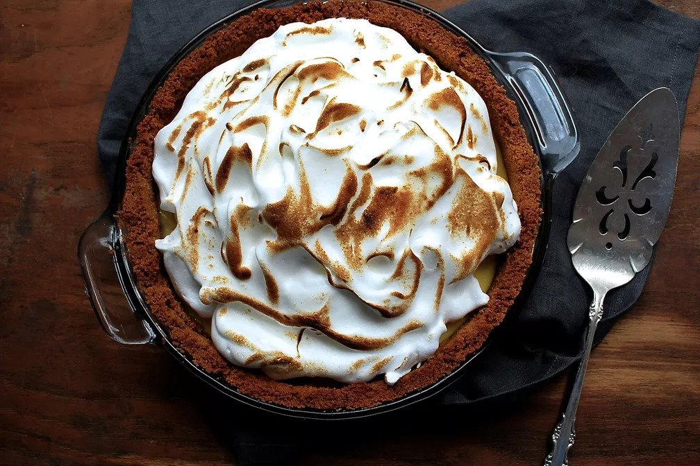

Key Lime Pie

Description
basic yet perfect Key lime pie, with added a meringue topping to cool the tartness of the citrus. Adapted from the Nellie & Joe's Key lime bottle
Ingredients
- graham cracker sheets
- melted butter
- eggs, separated
- sweetened condensed milk
- Key lime juice
- sugar
Steps
- Preheat your oven to 350° F. In a food processor, pulse the graham crackers until they are fine crumbs. Add the melted butter and pulse to combine.
- Press the graham cracker mixture into a 9-inch pie plate or tart pan. Bake the crust for 10 to 12 minutes, until golden and fragrant. Remove from oven and let cool slightly.
- While the crust is baking, whisk together the 3 egg yolks, condensed milk, and Key lime juice until blended. Pour the mixture into the crust and bake for 15 minutes, or until barely jiggly in the center. Remove from oven and let cool completely.
- In a stand mixer or large clean bowl, whip the egg whites until foamy. Slowly add the sugar and whip until the egg whites are in stiff peaks. Spoon the meringue over the cooled pie filling.
- If you want to toast the topping, use a kitchen torch to lightly toast the outside of the meringue or place it under the broiler on high. WATCH it carefully! It will brown very, very quickly!